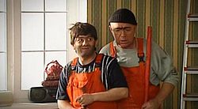

Наша Russia
| Жанр | Скетчком |
| Автор идеи | Семён Слепаков
Гарик Мартиросян Максим Пежемский |
| В главных ролях | Михаил Галустян
Сергей Светлаков Валерий Магдьяш Гарик Мартиросян |
| Страна | Россия |
| Телевизионный канал | ТНТ
ICTV; 1+1; 2+2(повтор) ATV |
| На экранах | с 4 ноября 2006 |
| Количество серий | 98 |
| Официальный веб-сайт | http://nasha-russia.ru |
| IMDb | ID 1202543 |
Многие СМИ сообщили, что 19 января 2010 года креативный продюсер шоу Гарик Мартиросян объявил, что «Наша Russia» выходить в эфир больше не будет, а аналогом заключительного эпизода станет полнометражный фильм «Наша Russia. Яйца судьбы», который вышел в российский прокат 21 января 2010 года[2], однако на самом деле Гарик Мартиросян говорил всего-лишь о том, что полнометражный фильм станет финалом историй самих героев скетчкома, а 13 марта выйдет новый пятый телевизионный сезон сериала с новыми городами и персонажами. Возможно, журналисты неправильно поняли или недослушали Гарика до конца, о чём свидетельствует официальное опровержение Гарика Мартиросяна[3] и телеканала ТНТ[4]. Пробный выпуск нового сезона сериала показан 31 декабря 2010 года в 22:35 по московскому времени. Официальная премьера состоялась 13 марта 2011 года в 20:00 по московскому времени. Из старых персонажей остались Сергей Юрьевич Беляков, Жорик Вартанов и оператор Рудик, а также Славик и Димон. Пятый сезон продолжился 2 сентября 2011 года и закончился 14 октября, новые серии сняли в мае 2012, ожидается 10 новых выпусков.[5].
В передаче присутствуют несколько сюжетных линий. Их наличие и смысл могут меняться от серии к серии. Например, сюжет о «краснодарских пацанах» изначально основывался на покупке ими презервативов (1-й сезон), затем место действия было перенесено в ночной клуб, куда они пытаются попасть (2-й сезон), потом они пытались купить порнофильмы, закадрить девушек, пройти мимо родителей, находясь под кайфом (третий сезон), заняться сексом с девушками, отдыхающими в Анапе (четвёртый сезон), познакомиться с москвичками (пятый сезон).

Равшан и Джамшут
Москва (сезоны 1-3), Сочи (сезон 4): два строителя-гастарбайтера из Таджикистана Равшан (Михаил Галустян) и Джамшут (Валерий Магдьяш) делают ремонт под руководством своего прораба («насяльника») (Сергей Светлаков). По сюжету фильма получили золотые яйца Чингисхана и вернулись на родину с остальными гастарбайтерами. Делали ремонт:
Сюжеты про Равшана и Джамшута были удалены из показа после действий[каких?] Самвела Гарибяна при поддержке Союза Армян России как ксенофобские и оскорбляющие Россию, а также национальное достоинство таджикского и армянского народов[6],[7].
Сезоны: 1-4, фильм, серии (1-74)
Санкт-Петербург: консьерж Людвиг Аристархович (Михаил Галустян) пакостит жильцам. Особенно любит где-нибудь нагадить, например под дверьми жильцов. Основные объекты «грязных дел» консьержа — надоедливый профессор Лев Моисеевич Звягинцев (Сергей Светлаков) (сезон 1, конец 3-го сезона) и богатая молодая красотка Лиля, которой Людвиг Аристархович безуспешно оказывает знаки внимания. Юмор данных сюжетов строится на корыстных мотивациях и лжи. Кроме того, данные сюжеты отчасти являются примером так называемого сортирного юмора. Любимая фраза: «А кто-кто-ктооо это сделал???». Также высмеивается традиционный стереотип Санкт-Петербурга как культурной столицы.
Сезоны: 1, 3, серии (1-8)
Таганрог: телезритель Сергей Юрьевич Беляков (Сергей Светлаков) комментирует телепередачи или просто разговаривает с телевизором (сезоны 1—5). А в 3-м сезоне он чаще смотрит телевизор с сыном и всегда выясняет для него что-нибудь полезное.
Житель самого плохого города в России (по мнению авторов «Наша Russia») — города Таганрога. Сергей Юрьевич — мужчина 40 лет, неопрятной наружности. Небрит. Одет в майку и трико. Беляков женат, имеет сына. Сергей Юрьевич очень критичен и ворчлив, считая, что причиной всех его бед является правительство нашей страны и, в частности, Таганрога. Несмотря на общую необразованность и невежество Сергея Юрьевича, его замечания часто точны и довольно чётко характеризуют происходящую ситуацию. Беляков часто подчеркивает, что он рабочий человек, и на таких тружениках, как он, держится вся Россия (работает Сергей живым рекламным щитом (это выяснилось во 2 сезоне, но в одной из серий 1 сезона он собирался устроиться сторожем в троллейбусное депо). Однажды выиграл в лотерее 10000 рублей, это показывалось в одном из эпизодов, когда он смотрел видеокассету с записью игры. Беляков обладает хорошим чувством юмора и постоянно посмеивается над героями передач, а также женой и сыном. Жена (Юлия Сулес) у Сергея Юрьевича - крупная женщина, страдающая излишним весом, любящая покушать. Терпит насмешки мужа, но часто его бьёт. Сын у Сергея - типичный подросток. Он курит, шатается по улице, сексуально озабочен и не обладает особым умом. Сергей не любит евреев, олигархов, чиновников, гаишников, правительство, сексуальные меньшинства, Тимати, Малахова и состоятельных людей. Беляков отстаивает идею простого русского человека, считая себя таковым. Любит все передачи связанные со спортивной тематикой. Сексуальная жизнь у Сергея не в порядке. Он винит в этом полноту жены и часто смотрит передачи, где есть красивые девушки, а также порнофильмы, скрывая это от неё.
Сезоны: 1 — 5, фильм, серии (1-98)
Омск: вечно проигрывающая футбольная команда «Омский ГазМяс» и их тренер-садист Евгений Михайлович Кишельский, которого играет Михаил Галустян. Чаще всего достается вратарю Гатальскому или Прокопенко. Обычно происходят сцены, когда тренер чуть ли не убивает вратаря команды Гатальского (Михаил Додзин) или пинает Прокопенко (сезоны 1, 2, 3). Иногда от тренера достаётся судье (Сергей Светлаков). Также известны случаи отрывания ушей на дне рождения, половых органов, выкалывания глаз или подпойка «допингом», на самом деле являвшегося отравой.
В третьем сезоне игроки «Газмяса» переодеваются в женщин и создают женскую футбольную команду «Омская ГазМясочка», так как тренер считал, что переодетые мужики выиграют у «сисястых дур». Но, тем не менее, команда опять постоянно проигрывает и выбывает из четвертого дивизиона. Те же ребята в женских платьях с фамилиями Гатальская и др. (сезон 3).
ГазМяс использовался как пародия на российский футбол, однако был убран из четвёртого сезона, вышедшего во второй половине 2008 года. Это было сделано, чтобы не оскорблять сборную России после успеха на чемпионате Евро-2008[8].
Сезоны 1-3, серии (1-44)
Нефтескважинск (вымышленный город): депутаты Юрий Венедиктович Пронин (Сергей Светлаков) и Виктор Харитонович Мамонов (Михаил Галустян) во время роскошного и дорогого отдыха думают об избирателях, но только на словах, а на деле у них всё совсем наоборот (сезоны 1, 3, 4). Кроме того, Юрий Венедиктович и Виктор Харитонович склонны к сексуальным извращениям, в том числе и к зоофилии. В последней серии 4 сезона было показано, что они и рублёвские бомжи — одни и те же люди. Показанный здесь юмор представляет собой политическую сатиру о том как политики говорят, что заботятся о народе, а в реальности сами живут в роскоши, разврате и безделии.
Сезоны 1, 3, 4, серии (2,4,24-74)
Челябинск: первый в мире фрезеровщик (хотя в сериале показан токарный станок розового цвета, а не фрезерный) с нетрадиционной сексуальной ориентацией Иван Дулин (Сергей Светлаков) страдает от любви к своему начальнику Михалычу, настоящее имя которого различно в разных сериях (напр. в день его рождения его называли Игорем Михалычем) (Михаил Галустян) (сезоны 1—4). Их часто застают в двусмысленной неловкой ситуации зам. Михалыча Геннадий Палыч или рабочие Егорыч и Дмитрич (иногда один Дмитрич).
Юмор сюжета в перевёрнутой с ног на голову ситуации — в жизни как правило начальство напрягает (народно-сексуально «имеет») подчинённых, здесь же всё наоборот — подчинённый «имеет» причём в прямом, гомосексуальном смысле своё начальство, непосредственно своего начальника цеха. С 4 сезона Иван Дулин был назначен начальником цеха, а Михалыч понижен до фрезеровщика. В заключительной серии 4 сезона Михалыч восстановлен в должности начальника цеха, а Иван Дулин повышен до директора завода. В этих героях обыгрывается т. н. «социальный мир» между капиталистами и наёмными работниками при капитализме. Рабочий так сильно «любит» начальника, что это перерастает в гомосексуализм. В 4-м сезоне заложена сатира на произвол начальства по отношению к своим подчиненным. Среди рабочих бытует такое выражение: «начальство меня отымеет», когда возникают неприятности на работе. Здесь же это выражение имеет прямой смысл, когда Иван Дулин был назначен начальником цеха, а Михалыч понижен до фрезеровщика.
Сезоны: 1 — 4, фильм, серии (1-74)
Краснодар (сезоны 1, 2, 3), Анапа (сезон 4),Москва (сезон 5): в различных сюжетах подростки Славик (Сергей Светлаков) и Димон (Михаил Галустян), проводя досуг, пытаются:
Сезоны: 1 — 5, фильм, серии (1-98)
Трасса «Пенза-Копейск»: проститутка Эльвира (Сергей Светлаков) и инспектор ГИБДД Гаврилов (Михаил Галустян), каждый по-своему зарабатывают деньги (сезон 2).
Сезоны: 2, серии (13-20)
Вологда: тяжёлая жизнь очень бедной семьи инспектора ГИБДД, лейтенанта милиции Николая Лаптева (Сергей Светлаков), никогда не берущего взятки (сезон 2).В этом неоднозначном сюжете сплетается юмор и правда. Юмор заключается в том, что в реальности все наоборот — в России большинство сотрудников госавтоинспекции МВД России берут взятки и богато живут, а также в том, что почти в каждом выпуске есть случай, где как раз не хватало именно той взятки, которую предлагали главному герою в этой серии. Жестокая правда в том, что честному сотруднику госавтоинспекции, а во многих случаях и других подразделений МВД трудно достойно жить на скромную зарплату, а их ежедневное служение долгу не оценено в обществе. Этот сюжет толкает их жить нечестно, нарушать закон и выглядит несколько издевательски и высмеивающим по отношению к честным сотрудникам МВД.
Сезоны: 2, фильм, серии (9-20)
Иваново: официантка суши-бара «Белая ива» Анастасия Кузнецова (Михаил Галустян) пытается найти себе мужчину, попутно разбираясь со спутницами клиентов (сезон 2). Ради соблазнения готова высыпать на голову соперниц пепел из пепельницы и обозвать всех «коровами» или «сучками». Сюжетная линия изобилует пошлыми моментами и откровенными намеками на оральный секс.
Сезоны: 2, Фильм, серии (9-19)
Воронеж: учительница престижной школы Снежана Денисовна (Сергей Светлаков) обманом и шантажом вымогает у учеников и их родителей деньги на собственные нужды (сезоны 3, 4).
Сезоны: 3, 4, фильм, серии (21-74)
Рублёвка: избалованные бомжи Сифон (Харитон) (Сергей Светлаков) и Борода (Митрич) (Михаил Галустян) копаются в помойках олигархов (сезоны 3, 4). Иногда к ним в гости приходит бомж с Казанского вокзала Колян (Валерий Магдьяш). В конце четвёртого сезона показывается скетч, в котором они становятся депутатами Мамоновым и Прониным.
Сезоны: 3, 4, фильм, серии (21-74)
Пятигорск: ведущий местных новостей на СевКав-ТВ Жорик Вартанов (Михаил Галустян) каждый день выходит в прямой эфир, где эмоционально рассказывает о различных событиях Пятигорска, постоянно вступая в перепалку с оператором Рудиком (Гарик Мартиросян). Юмор основан на добром пародировании образа жизни жителей Северокавказских регионов, их поведения в обществе, манеры одеваться и говорить, а также высмеивает использование известными актерами и звездами шоу-бизнеса воровского жаргона. Очень часто употребляет в речи слово «Вася». Известно также, что Жорик, помимо основной работы телеведущим, также подрабатывает таксистом (в начале 4 сезона). Жорик сексуально озабочен, по крайней мере, ему трудно удержаться от комментариев, когда речь идет о красивой актрисе или же, когда он берет интервью у красивой девушки в эфире.
Сезоны: 4, 5 серии (45-98)
Усть-Кузьминск (вымышленный город, но на стене в кабинете майора висит подробная карта Красноярска): Майор Дронов Егор Сергеевич (Михаил Галустян) и проницательная оперативница Ермолкина (Сергей Светлаков) борются с преступностью в родном городе. Причём Дронов постоянно учит неопытную Ермолкину «правильному раскрытию дел», хотя это является лишь превышением полномочий, так как виновные — влиятельные люди. Дронов всегда «кашляет» при упоминании знакомой фамилии и места работы её обладателя. Юмор основан на уделении полицейскими большого внимания мелким преступлениям и «отмазке» влиятельных людей и их родственников.
Сезоны: 5, серии (75-84,96-97)
Анталья: Гена (Сергей Светлаков) и Вован (Михаил Галустян) из Нижнего Тагила отрываются по полной со своей видеокамерой японского производства на отдыхе в Турции. При этом они ведут себя достаточно развязно: смеются, пьют, гуляют, портят имущество отеля, справляют нужду в бассейн, прикалываются над персоналом и посетителями турецкого отеля. Постоянно ругаются матом, а обслуживающий персонал отеля презрительно называют «рабами». Вован практически в каждой серии находится в состоянии сильнейшего алкогольного опьянения и говорит лишь одну фразу: «Тагиииил!» (других слов он не произносит вообще за исключением слова «Победа» в скетче про день победы). Иногда после этого слова Гена добавляет «Тагил реально рулит и разруливает». Вован часто падает на ровном месте и засыпает в неподходящих местах, а Гена его частенько подбадривает: «Вован, красава!». Юмор данной сюжетной линии заключается в том, что поведение Гены и Вована является пародией на поведение многих российских туристов, отдыхающих за границей. И Гена, и Вован — оба женаты, соответственно, на Танюхе и Ксюхе. Также у Гены есть сын Дима. Съемки проходят в отеле "Amara Dolce Vita 5* в посёлке Текирова.[источник не указан 203 дня]
Сезоны: 5 , серии (75-95,97-98)
Новосибирск: Филипп Валентинович (Сергей Светлаков) и Анна Викторовна — пенсионеры, которые отдали 50 лет жизни работе в НИИ. Все проблемы они решают с помощью оружия (в одном эпизоде машиной). Вообще не разговаривают. В основе сюжета заложена сатира на наплевательское отношение к людям пенсионного возраста, в скетче содержится чёрный юмор (кроме первой и второй их истории). К посторонним людям и явлениям относятся крайне агрессивно, причем даже к вполне безобидным. Достается всем: сектанту, который хотел навернуть их в секту, участникам шоу «Сожители-2» (намек на реально существующее реалити-шоу Дом-2), кортежу важного лица, мешавшего пенсионерам попасть на дачу, соседу, который затопил их, парню внучки, который собирался отправить пару в дом престарелых, промоутеру, назойливо рекламирующему свой товар, тетке из конторы, гоняющей стариков по инстанциям за справками и даже телевизору, за то, что он показывает «красивую жизнь», которая пенсионерам не по карману. В одной из серий даже упомянута телепередача «Дом-2»: Филипп Валентинович пришёл на передачу и расстрелял всех ведущих и участников шоу. У Филиппа сосед сверху — такой же пенсионер, как и он. В конце скетча играет танго «Утомлённое солнце». Известно, что у Филиппа Валентиновича есть машина «Москвич-2140/2138».
Сезоны: 5, серии (75-96)
Рязань: Александр Родионович Бородач (Михаил Галустян) — охранник, постоянно меняет место работы. Картавит, но, несмотря на это, в речи чаще использует слова с буквой «р». Поэтому почти всегда в фамилии сильно произносится «р» — Борродач. Когда милиционеры смеются над его фамилией, он обижается: "Чё вы ржёте, нормальная фамилия!". Бородач — вор, лжец, дебошир, алкоголик и наркоман, всё время попадающий в криминальные истории. Имеет кучу друзей, также работающих в разных местах (среди них фигурирует «Ирка из продуктового», которой он безуспешно пытается уделять знаки внимания). Не может проработать ни в одном месте более трёх дней (за исключением одного эпизода, где он проработал на одном месте 4 дня, чему удивились милиционеры и сам Бородач). Постоянно пользуется служебным положением и попадает в идиотские ситуации, часто это случается из-за женщин.
Бородач имеет незаконченное среднее образование, о чем он сам заявил в одной из серии 5 сезона, в которой собирался на вечер встреч одноклассников. Любит женщин с пухлыми формами. Почти всегда, когда милиционеры рассказывают про ущерб, который нанёс Бородач тому или иному заведению, он отвечает «Это прискорбно» или «Ни хера себе, я не в курсе, ребята», или «Не отрицаю». Часто употребляет слово «хер» и производные от него. А допрашивающие его милиционеры сильно обижаются, когда их называют «мусорами».
Скетч заканчивается тем что Бородача куда-то уводят при избиениях, которые используются на допросе. На вопрос милиционеров, что же с ним сделать, он почти всегда отвечает: «Понять и простить», и иногда что-нибудь к этому добавляет в зависимости от ситуации.
Сезоны: 5, серии (75-98)
Москва: Футбольные фанаты: Вася, болельщик питерской «Невы» (Михаил Галустян) и Валера, болельщик московского «Москвича» (Роман Юнусов), вдвоём попадают в больницу после матча в результате массовой драки и оказываются в одной палате. Даже закованные в гипс, они ухитряются пакостить друг другу. Понятно, что футбольные клубы вымышленные, однако их эмблемы — явный намёк на «Спартак» и «Зенит», болельщики которых имеют между собой неприязненные отношения. Их обоих лечит Игорь Валентинович, болельщик «Локомотива».
Сезоны: 5, серии (78-93)
Московская область: У врача Вадима Рудольфовича (Сергей Светлаков) в одной палате оказываются два пациента: Анна Сергеевна, которая лечится за счёт государства, и Игорь Анатольевич, который лечится за свои деньги. Соответственно, относится он к ним по-разному. Персонаж высмеивает отношение государства к медицине. Примечательно, что угол палаты, в котором лежит Анна Сергеевна, имеет убогий вид: потрескавшиеся стены, поросшие грибком трубы, висящая прямо над головой электропроводка, неудобная кровать, грязный пол; остальная же часть, где лежит Игорь Анатольевич, — довольно хорошо обустроена, наклеены новые обои, есть пластиковые окна, а в последних сериях у него появляется новый плазменный телевизор со спутниковым телевидением. Анну Сергеевну лечат дешёвыми слабыми либо вообще запрещёнными во многих странах лекарствами, которые идут за счёт государства. Соседа по палате лечат абсолютно противоположными лекарствами от Анны Сергеевны, также известны случаи, когда его анализы для проверки отправляют в страны с высоко развитой медициной (напр. в Германию), а некоторые лекарства проверяют на Анне Сергеевне следя за побочными эффектами. В одном из эпизодов Анна Сергеевна чуть было не умерла в результате халатности неопытных студентов-практикантов, которые вкололи ей препарат, используя грязный шприц, подобранный с пола.
Сезоны: 5, серии (80-95,98)
За время показа «Нашей Раши» в сериале прозвучало 9 песен:
| Название песни | Автор песни | Исполнитель | Описание |
| Наша Russia | музыка и слова: Павел Воля | П. Воля,
А. Массалитнов | Песня исполняется во время финальных титров 1—4 сезонов. У песни также есть две менее известные полные версии, одна исполнялась в одном из выпусков «Comedy club», другая версия была записана специально для сольного альбома Павла Воли «Respect и Уважуха», также исполняется во время финальных титров полнометражного фильма «Наша Russia. Яйца судьбы». |
| Всё будет офигенно | музыка и слова: Павел Воля | П. Воля | тема из серий о Славике и Димоне, и также, начиная с 5 сезона из серий про туристов Гену и Вована. |
| Таджикистонама | музыка: Гарик Мартиросян, слова: Михаил Галустян | М. Галустян | песня мамы Джамшута, исполненная Равшаном |
| Чёрный хип-хоп | музыка и слова: Михаил Галустян | М. Галустян | Песню исполняет Равшан строителю дачи Тимати |
| Михалыч | музыка и слова: Сергей Светлаков | С. Светлаков | песня Дулина, посвящённая Михалычу |
| Жёльдама тюльпфана (Жёлтые тюльпаны) | музыка и слова: Игорь Николаев | М. Галустян,
В. Магдьяш | исполнялись Равшаном и Джамшутом в импровизированном «караоке» во время стройки в Сочи. Также упоминалась в 1-м сезоне (4 эпизод). |
| А у нас сегодня ясный день | музыка и слова: народные | О. Щукин,
М.Емельянов, Ю.Сенькович, | Свадебная песня. Исполняют сваты (фолк-артель Слобода) в серии где Дулин сватается к Михалычу. По народной традиции песня поётся про нынешних жениха и невесту: «…а у нас Дулин — кавалер, а у нас Михалыч — барышня»! |
| ГазМяс | музыка и слова: Гарик Мартиросян | Наша Russia | Гимн футбольной команды ГазМяс |
| Наша Россия — страшная сила | музыка и слова: П.Воля | П. Воля | используется по окончании выпусков 5 сезона. |
| № | Полная нумерация | Неполная нумерация |
| 1 сезон | 1-8 | 1-8 |
| 2 сезон | 9-20 | 9-20 |
| 3 сезон | 21-44 | 21-38 |
| 4 сезон | 45-74 | 39-56 |
| 5 сезон | 75-98 | 57-78 |
| 6 сезон | 99-1?? | 79-9? |